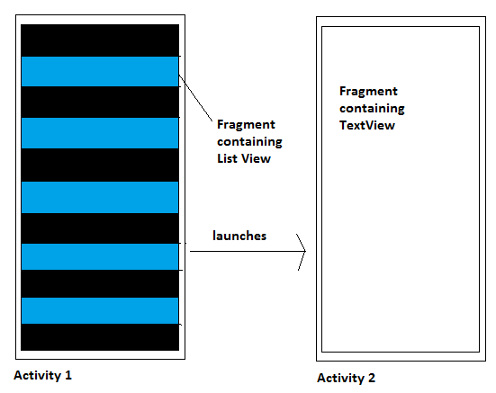
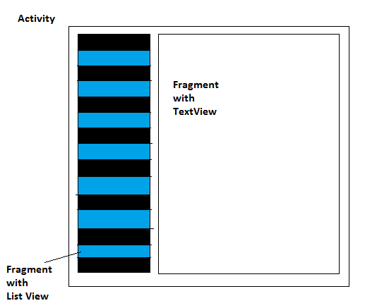

Originally, Android ran primarily on phones, and the model of a main activity for the main screen, followed by sub-activities for lists, preferences, and so on, worked well. However, after a while, Android tablets with larger screens started appearing. For tablets, having to navigate to a separate activity to choose one of a list of options, or to set preferences, is a little wasteful in terms of time: would it not be better for a tablet if the main activity and sub-activities shared screen space? For example, in an app which shows local restaurants, you could have a map on the main part of the screen and a sidebar containing a list allowing the user to select restaurant types (Chinese, Indian, etc). By contrast, on a phone the same app could have just the map on the main screen and the list of restaurant types as a separate activity.
So the question is, how can we do this? How can we develop an app in which two activities are on the main screen on a tablet, but on separate screens on a phone? The first thing to realise is that we can never have more than one activity per screen, so we cannot simply have two activities side by side. Instead, we do this through the use of fragments. A fragment is a sub-section of an activity which performs a specific job. So on the tablet, our main activity would contain two fragments (map and list) while on the phone, we would have two separate activities, each with one fragment (either the map or the list).
This is illustrated in the diagrams below.


The use of fragments is not restricted to tablets. Even if we are only interested in phones, in landscape mode we might be able to fit two side-by-side fragments into the activity, while in portrait mode we would have to use two activities each with their own fragment. Because you may not have access to a tablet, the examples will involve using a one-activity two-fragment layout in landscape mode and a two-activity one-fragment-per-each layout in portrait mode. However the principles apply equally to phone vs. tablet.
Another common use of fragments is to dynamically swap areas of screen content. For example, in a music database application, the main activity could by default contain a fragment to allow the user to search for music. When the user selects a menu option, this fragment could be dynamically swapped for another fragment to allow the user to add a new song.
We will do some work on fragments this week, and more next week. Today, we will focus on dynamically swapping sections of the user interface and next week we will look at how we can send information between fragments.
Before we look at fragments we will take a look at the navigation drawer. The navigation drawer is part of material design: a series of user interface guidelines for Android and web apps drawn up by Google. Material design comes with a series of standard components, of which the navigation drawer is one. The navigation drawer is a component allowing a "slide-out" menu from typically the left of the screen. A common pattern in fragment-based applications is to have menu options on a navigation drawer which swap one fragment for another.
<androidx.drawerlayout.widget.DrawerLayout android:layout_width="match_parent"
android:layout_height="match_parent"
xmlns:app="http://schemas.android.com/apk/res-auto"
android:id="@+id/drawerLayout"
xmlns:android="http://schemas.android.com/apk/res/android">
<androidx.constraintlayout.widget.ConstraintLayout xmlns:android="http://schemas.android.com/apk/res/android"
xmlns:app="http://schemas.android.com/apk/res-auto"
xmlns:tools="http://schemas.android.com/tools"
android:layout_width="match_parent"
android:layout_height="match_parent"
tools:context=".MainActivity">
... MAIN ACTIVITY LAYOUT GOES HERE ...
</androidx.constraintlayout.widget.ConstraintLayout>
<com.google.android.material.navigation.NavigationView
android:id="@+id/nv"
android:layout_width="wrap_content"
android:layout_height="match_parent"
android:layout_gravity="start"
app:menu="@menu/menu" />
</androidx.drawerlayout.widget.DrawerLayout>
nv.setNavigationItemSelectedListener {
when(it.itemId) {
R.id.item1 -> { ... }
R.id.item2 -> { ... }
else -> { ... }
}
true // can omit "return" in lambdas
}
androidx.drawerlayout.widget.DrawerLayout android:layout_width="match_parent"
android:layout_height="match_parent"
xmlns:app="http://schemas.android.com/apk/res-auto"
android:id="@+id/drawerLayout"
xmlns:android="http://schemas.android.com/apk/res/android">
<androidx.constraintlayout.widget.ConstraintLayout xmlns:android="http://schemas.android.com/apk/res/android"
xmlns:app="http://schemas.android.com/apk/res-auto"
xmlns:tools="http://schemas.android.com/tools"
android:layout_width="match_parent"
android:layout_height="match_parent"
tools:context=".MainActivity">
<FrameLayout
android:layout_width="0dp"
android:layout_height="0dp"
app:layout_constraintTop_toTopOf="parent"
app:layout_constraintLeft_toLeftOf="parent"
app:layout_constraintRight_toRightOf="parent"
app:layout_constraintBottom_toBottomOf="parent"
android:id="@+id/frameLayout1"/>
</androidx.constraintlayout.widget.ConstraintLayout>
<com.google.android.material.navigation.NavigationView
android:id="@+id/nv"
android:layout_width="wrap_content"
android:layout_height="match_parent"
android:layout_gravity="start"
app:menu="@menu/menu" />
</androidx.drawerlayout.widget.DrawerLayout>
Each entry in the Navigation Drawer should make a particular fragment appear in the FrameLayout when selected. To do this we will make use of fragment transactions, described below. Before we do this, we will discuss how to code a simple Fragment. The Fragment would be in a separate class, entirely separate to the main activity.
Here is a simple example of code for a Fragment; note that the onCreateView() method is used to set the UI of a fragment by inflating a layout (frag1.xml here). So whatever is in frag1.xml would become the fragment's layout.
import androidx.fragment.app.Fragment
import android.os.Bundle
import android.view.LayoutInflater
import android.view.View
import android.view.ViewGroup
class Frag1 : Fragment() {
override fun onCreateView(inflater: LayoutInflater, container: ViewGroup?, savedInstanceState: Bundle?): View? {
return inflater?.inflate(R.layout.frag1, container, false)
}
}
Note how we use a LayoutInflater to inflate the XML layout described in frag1.xml into a View object, which becomes the fragment's View. Note also the "false" passed in as the third parameter to inflate(). This indicates that we should not automatically attach the fragment to its parent. In this example, we will attach fragments programmatically when the user selects navigation drawer items, so we do not want to attach the fragment to its parent.
We will now return to replacing the fragment inside the FrameLayout with
another. We use a fragment transaction for this. The code below shows how you can replace the contents of the FrameLayout using a fragment transaction. Imagine we have two fragment classes, Frag1 and Frag2, and we want to swap between these two fragments when the user selects the appropriate menu items in the navigation drawer:
val frag1 = Frag1() // create instance of fragment 1
val frag2 = Frag2() // create instance of fragment 2
nv.setNavigationItemSelectedListener {
try {
val frag = if (it.itemId == R.id.item1) frag1 else frag2
drawerLayout.closeDrawers()
supportFragmentManager.beginTransaction().replace(R.id.frameLayout1, frag).commit()
true
} catch(e: Exception) {
e.printStackTrace()
false
}
}
Frag1 and Frag2, and use the fragment manager to replace the contents of the frame layout with the selected fragment.package com.example.navdrawerapp
import androidx.appcompat.app.AppCompatActivity
import android.os.Bundle
import android.view.LayoutInflater
import android.view.View
import android.view.ViewGroup
class MainActivity : AppCompatActivity() {
override fun onCreate(savedInstanceState: Bundle?) {
super.onCreate(savedInstanceState)
setContentView(R.layout.activity_main)
val nv = findViewById<NavigationView>(R.id.nv)
val drawerLayout = findViewById<DrawerLayout>(R.id.drawerLayout)
val frag1 = Frag1()
val frag2 = Frag2()
nv.setNavigationItemSelectedListener {
try {
val frag = if (it.itemId == R.id.item1) frag1 else frag2
drawerLayout.closeDrawers()
supportFragmentManager.beginTransaction().replace(R.id.frameLayout1, frag).commit()
true
} catch(e: Exception) {
e.printStackTrace()
false
}
}
// Fill the FrameLayout with fragment 1 by default
try {
supportFragmentManager.beginTransaction().replace(R.id.frameLayout1, frag1).commit()
} catch(e: Exception) {
e.printStackTrace()
}
}
}
To work with the above example you need to include the following dependency, which includes the Material Design components:
implementation 'com.google.android.material:material:1.3.0'
Return to your Room database application (week 7) and modify to use fragments. Change your activity to use a DrawerLayout and a navigation drawer. There should be two fragments, of which only one should be visible at a time. Each fragment will need its own XML layout (separate from the main activity layout). So you will need:
Do the following:
To access elements of a agment layout, you need to use findViewById() on the fragment's view property; this is because the elements are part of the fragment's layout, not part of the layout of the activity. For example, from within the MainActivity, this code would find the EditText with the ID of et1 within the current fragment.
The code to access the layout should go inside the onActivityCreated() method of your fragment. Please see the video recording on Teams (labelled Week10_PLEASE_WATCH_THIS...) for more details. Only in onActivityCreated() will the fragment and activity be fully initialised; before this the fragment's view may be null which means you cannot access the UI elements. Inside the fragment you can use activity to refer to the parent activity.
// In your fragment
override fun onActivityCreated(savedInstanceState: Bundle) {
// the fragment's view is nullable, that's why we use the null-safety
// operator and apply()
view?.apply {
// inside the apply(), 'this' refers to the view
val et1 = this.findViewById<EditText>(R.id.et1)
// ... etc
}
}